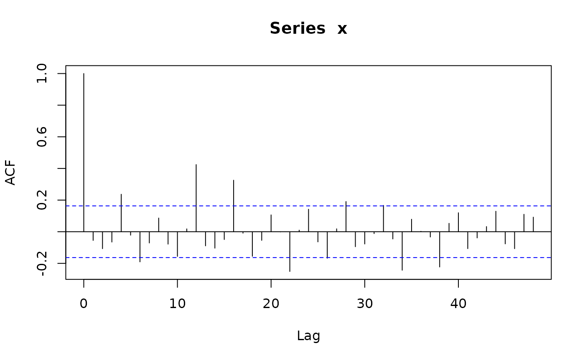
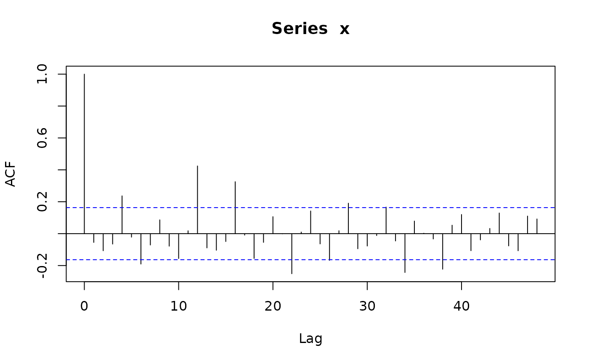

Simulate trajectories of seasonal arima models
sim_sarima.RdSimulate trajectories of seasonal arima models.
Usage
sim_sarima(model, n = NA, rand.gen = rnorm, n.start = NA, x, eps,
xcenter = NULL, xintercept = NULL, ...)Arguments
- model
specification of the model, a list, see `Details'.
- rand.gen
random number generator for the innovations.
- n
length of the time series.
- n.start
number of burn-in observations.
- x
initial/before values of the time series, a list, a numeric vector or time series, see Details.
- eps
initial/before values of the innovations, a list or a numeric vector, see Details.
- xintercept
non-constant intercept which may represent trend or covariate effects.
- xcenter
currently ignored.
- ...
additional arguments for
arima.simandrand.gen, see `Details'.
Details
The model is specified by the argument "model" which is a list with
elements suitable to be passed to new("SarimaModel", ...), see
the description of class "SarimaModel". Here are some of the
possible components:
- nseasons
number of seasons in a year (or whatever is the larger time unit)
- iorder
order of differencing, specifies the factor \((1-B)^{d1}\) for the model.
- siorder
order of seasonal differencing, specifies the factor \((1-B^{period})^{ds}\) for the model.
- ar
ar parameters (non-seasonal)
- ma
ma parameters (non-seasonal)
- sar
seasonal ar parameters
- sma
seasonal ma parameters
Additional arguments for rand.gen may be specified
via the "..." argument.
In particular, the length of the generated series is specified with
argument n. Arguments for rand.gen can also be passed
via the "..." argument.
sim_sarima calls internally arima.sim to simulate the
ARMA part of the model. Then undifferences the result to obtain the
end result.
The function returns the simulated time series from the requested model.
Information about the model is printed on the screen if
info = "print". To suppress this, set info to any other
value.
For multple simulations with the same (or almost the same) setup, it is
better to execute prepareSimSarima once and call the
function returned by it as many times as needed.
Examples
require("PolynomF") # guaranteed to be available since package "sarima" imports it.
#> Loading required package: PolynomF
x <- sim_sarima(n=144, model = list(ma=0.8)) # MA(1)
x <- sim_sarima(n=144, model = list(ar=0.8)) # AR(1)
x <- sim_sarima(n=144, model = list(ar=c(rep(0,11),0.8))) # SAR(1), 12 seasons
x <- sim_sarima(n=144, model = list(ma=c(rep(0,11),0.8))) # SMA(1)
# more enlightened SAR(1) and SMA(1)
x <- sim_sarima(n=144,model=list(sar=0.8, nseasons=12, sigma2 = 1)) # SAR(1), 12 seasons
x <- sim_sarima(n=144,model=list(sma=0.8, nseasons=12, sigma2 = 1)) # SMA(1)
x <- sim_sarima(n=144, model = list(iorder=1, sigma2 = 1)) # (1-B)X_t = e_t (random walk)
acf(x)
 acf(diff(x))
acf(diff(x))
 x <- sim_sarima(n=144, model = list(iorder=2, sigma2 = 1)) # (1-B)^2 X_t = e_t
x <- sim_sarima(n=144, model = list(siorder=1,
nseasons=12, sigma2 = 1)) # (1-B)^{12} X_t = e_t
x <- sim_sarima(n=144, model = list(iorder=1, siorder=1,
nseasons=12, sigma2 = 1))
x <- sim_sarima(n=144, model = list(ma=0.4, iorder=1, siorder=1,
nseasons=12, sigma2 = 1))
x <- sim_sarima(n=144, model = list(ma=0.4, sma=0.7, iorder=1, siorder=1,
nseasons=12, sigma2 = 1))
x <- sim_sarima(n=144, model = list(ar=c(1.2,-0.8), ma=0.4,
sar=0.3, sma=0.7, iorder=1, siorder=1,
nseasons=12, sigma2 = 1))
x <- sim_sarima(n=144, model = list(iorder=1, siorder=1,
nseasons=12, sigma2 = 1),
x = list(init=AirPassengers[1:13]))
p <- polynom(c(1,-1.2,0.8))
solve(p)
#> [1] 0.75-0.8291562i 0.75+0.8291562i
abs(solve(p))
#> [1] 1.118034 1.118034
sim_sarima(n=144, model = list(ar=c(1.2,-0.8), ma=0.4, sar=0.3, sma=0.7,
iorder=1, siorder=1, nseasons=12))
#> [1] 0.00000000 0.00000000 0.00000000 0.00000000 0.00000000
#> [6] 0.00000000 0.00000000 0.00000000 0.00000000 0.00000000
#> [11] 0.00000000 0.00000000 0.00000000 0.00000000 0.00000000
#> [16] 0.00000000 0.00000000 0.00000000 0.00000000 0.00000000
#> [21] 0.00000000 0.00000000 0.00000000 0.00000000 0.00000000
#> [26] 0.00000000 0.00000000 -0.23828868 -0.64567311 1.21631202
#> [31] 4.46797352 3.70061234 -1.48789862 -5.63512713 -6.56178750
#> [36] -4.40618955 -0.69544872 4.35490638 9.22183066 11.42522876
#> [41] 10.27156322 11.51914195 14.27575374 10.30290660 0.08298643
#> [46] -6.71312585 -7.63883964 -1.73972383 6.67476689 15.91543111
#> [51] 22.52165519 23.49684907 18.57707810 16.01676905 14.99021394
#> [56] 8.06192182 -4.78695552 -12.35732213 -12.10563492 -3.15272391
#> [61] 9.81490907 24.29754745 32.25474423 30.38687876 19.16173696
#> [66] 8.09323297 -1.13932610 -11.98034650 -24.44774440 -29.24997186
#> [71] -24.65100359 -13.03013805 0.10248911 12.00478801 15.16848905
#> [76] 8.89408567 -5.06425472 -20.20250829 -36.00806889 -53.10206795
#> [81] -68.15232330 -72.24473398 -61.49669309 -42.52951665 -26.19265178
#> [86] -17.42270954 -20.72789881 -33.72770058 -53.02771080 -73.38770888
#> [91] -93.86714649 -113.62312883 -126.53921655 -125.63964839 -107.51895917
#> [96] -82.16551321 -63.75026097 -57.44304389 -66.04843711 -82.89179910
#> [101] -105.10563326 -128.28078377 -151.98731632 -173.18741354 -183.86003684
#> [106] -177.48098787 -152.09520799 -122.93140775 -106.64898366 -106.36847231
#> [111] -122.95693418 -142.61407519 -162.26099820 -180.60670189 -201.95825673
#> [116] -223.61840083 -236.88323089 -231.80782329 -204.13994900 -172.31603674
#> [121] -154.10547653 -152.96607310 -172.96023473 -196.76044093 -218.83966568
#> [126] -235.50832954 -251.98991418 -267.28812273 -276.40383323 -269.45735826
#> [131] -242.04191879 -211.44258359 -192.22234484 -188.27004973 -208.23888799
#> [136] -235.13340073 -262.92708065 -283.96608507 -299.37197391 -305.51708147
#> [141] -302.99655137 -287.40404462 -256.74724841 -227.97642558
x <- sim_sarima(n=144, model=list(ma=0.4, iorder=1, siorder=1, nseasons=12))
acf(x, lag.max=48)
x <- sim_sarima(n=144, model = list(iorder=2, sigma2 = 1)) # (1-B)^2 X_t = e_t
x <- sim_sarima(n=144, model = list(siorder=1,
nseasons=12, sigma2 = 1)) # (1-B)^{12} X_t = e_t
x <- sim_sarima(n=144, model = list(iorder=1, siorder=1,
nseasons=12, sigma2 = 1))
x <- sim_sarima(n=144, model = list(ma=0.4, iorder=1, siorder=1,
nseasons=12, sigma2 = 1))
x <- sim_sarima(n=144, model = list(ma=0.4, sma=0.7, iorder=1, siorder=1,
nseasons=12, sigma2 = 1))
x <- sim_sarima(n=144, model = list(ar=c(1.2,-0.8), ma=0.4,
sar=0.3, sma=0.7, iorder=1, siorder=1,
nseasons=12, sigma2 = 1))
x <- sim_sarima(n=144, model = list(iorder=1, siorder=1,
nseasons=12, sigma2 = 1),
x = list(init=AirPassengers[1:13]))
p <- polynom(c(1,-1.2,0.8))
solve(p)
#> [1] 0.75-0.8291562i 0.75+0.8291562i
abs(solve(p))
#> [1] 1.118034 1.118034
sim_sarima(n=144, model = list(ar=c(1.2,-0.8), ma=0.4, sar=0.3, sma=0.7,
iorder=1, siorder=1, nseasons=12))
#> [1] 0.00000000 0.00000000 0.00000000 0.00000000 0.00000000
#> [6] 0.00000000 0.00000000 0.00000000 0.00000000 0.00000000
#> [11] 0.00000000 0.00000000 0.00000000 0.00000000 0.00000000
#> [16] 0.00000000 0.00000000 0.00000000 0.00000000 0.00000000
#> [21] 0.00000000 0.00000000 0.00000000 0.00000000 0.00000000
#> [26] 0.00000000 0.00000000 -0.23828868 -0.64567311 1.21631202
#> [31] 4.46797352 3.70061234 -1.48789862 -5.63512713 -6.56178750
#> [36] -4.40618955 -0.69544872 4.35490638 9.22183066 11.42522876
#> [41] 10.27156322 11.51914195 14.27575374 10.30290660 0.08298643
#> [46] -6.71312585 -7.63883964 -1.73972383 6.67476689 15.91543111
#> [51] 22.52165519 23.49684907 18.57707810 16.01676905 14.99021394
#> [56] 8.06192182 -4.78695552 -12.35732213 -12.10563492 -3.15272391
#> [61] 9.81490907 24.29754745 32.25474423 30.38687876 19.16173696
#> [66] 8.09323297 -1.13932610 -11.98034650 -24.44774440 -29.24997186
#> [71] -24.65100359 -13.03013805 0.10248911 12.00478801 15.16848905
#> [76] 8.89408567 -5.06425472 -20.20250829 -36.00806889 -53.10206795
#> [81] -68.15232330 -72.24473398 -61.49669309 -42.52951665 -26.19265178
#> [86] -17.42270954 -20.72789881 -33.72770058 -53.02771080 -73.38770888
#> [91] -93.86714649 -113.62312883 -126.53921655 -125.63964839 -107.51895917
#> [96] -82.16551321 -63.75026097 -57.44304389 -66.04843711 -82.89179910
#> [101] -105.10563326 -128.28078377 -151.98731632 -173.18741354 -183.86003684
#> [106] -177.48098787 -152.09520799 -122.93140775 -106.64898366 -106.36847231
#> [111] -122.95693418 -142.61407519 -162.26099820 -180.60670189 -201.95825673
#> [116] -223.61840083 -236.88323089 -231.80782329 -204.13994900 -172.31603674
#> [121] -154.10547653 -152.96607310 -172.96023473 -196.76044093 -218.83966568
#> [126] -235.50832954 -251.98991418 -267.28812273 -276.40383323 -269.45735826
#> [131] -242.04191879 -211.44258359 -192.22234484 -188.27004973 -208.23888799
#> [136] -235.13340073 -262.92708065 -283.96608507 -299.37197391 -305.51708147
#> [141] -302.99655137 -287.40404462 -256.74724841 -227.97642558
x <- sim_sarima(n=144, model=list(ma=0.4, iorder=1, siorder=1, nseasons=12))
acf(x, lag.max=48)
 x <- sim_sarima(n=144, model=list(sma=0.4, iorder=1, siorder=1, nseasons=12))
acf(x, lag.max=48)
x <- sim_sarima(n=144, model=list(sma=0.4, iorder=0, siorder=0, nseasons=12))
acf(x, lag.max=48)
x <- sim_sarima(n=144, model=list(sma=0.4, iorder=1, siorder=1, nseasons=12))
acf(x, lag.max=48)
x <- sim_sarima(n=144, model=list(sma=0.4, iorder=0, siorder=0, nseasons=12))
acf(x, lag.max=48)
 x <- sim_sarima(n=144, model=list(sar=0.4, iorder=0, siorder=0, nseasons=12))
acf(x, lag.max=48)

x <- sim_sarima(n=144, model=list(sar=-0.4, iorder=0, siorder=0, nseasons=12))
acf(x, lag.max=48)
x <- sim_sarima(n=144, model=list(sar=0.4, iorder=0, siorder=0, nseasons=12))
acf(x, lag.max=48)

x <- sim_sarima(n=144, model=list(sar=-0.4, iorder=0, siorder=0, nseasons=12))
acf(x, lag.max=48)
 x <- sim_sarima(n=144, model=list(ar=c(1.2, -0.8), ma=0.4, sar=0.3, sma=0.7,
iorder=1, siorder=1, nseasons=12))
## use xintercept to include arbitrary trend/covariates
sim_sarima(n = 144, model = list(sma = 0.4, ma = 0.4, sar = 0.8, ar = 0.5,
nseasons = 12, sigma2 = 1), xintercept = 1:144)
#> [1] -1.7028206 -4.2552544 0.6031557 -3.7595551 3.2502059 -1.0014708
#> [7] -0.4166221 0.6487623 -1.1612579 -1.9107963 1.7373734 0.7426782
#> [13] 0.2028858 9.9509361 21.3149602 21.1297067 30.8475287 31.7308682
#> [19] 35.5310640 39.3249788 39.7186856 40.1603899 46.3437536 47.4366935
#> [25] 48.2989884 58.2658497 68.2526690 68.0757696 78.3293540 81.9755916
#> [31] 87.9953056 95.7805666 98.9461714 99.8616928 108.4943148 112.2881548
#> [37] 113.5097238 121.9505037 130.9465848 131.7318174 141.0464392 144.4328651
#> [43] 152.0355060 160.8001271 167.2286130 168.8813113 179.9059394 185.2304833
#> [49] 185.8349645 194.1738519 202.8188476 206.2850620 218.4214101 222.1746669
#> [55] 229.8747471 239.0672355 246.9969012 249.8772368 261.7959069 267.2451974
#> [61] 270.5384530 279.4973911 287.8935781 294.1067736 305.6412627 309.1315469
#> [67] 317.0407669 326.2849002 334.2477137 337.0214079 347.6802796 355.8892894
#> [73] 362.8405145 372.7529053 381.9107786 387.7974373 397.0390857 401.1203915
#> [79] 410.2055395 419.8319068 428.7069398 431.9550005 443.6098782 452.0527422
#> [85] 457.7257578 466.5729322 476.2211433 482.7560788 491.9198132 499.5755100
#> [91] 511.8579568 522.1290908 530.4673592 533.4031199 545.2566049 555.0509430
#> [97] 559.0819851 568.0401171 575.7152520 582.8856360 594.5731416 603.4028167
#> [103] 616.2361734 625.6702036 634.0781795 637.1689865 647.2727752 657.6555370
#> [109] 662.5629163 672.8235628 681.3049270 692.1820541 704.2305652 711.7944971
#> [115] 721.9623403 729.7943512 738.0857793 744.2021025 754.2266674 763.3378503
#> [121] 767.2226173 778.9132743 788.5506175 800.6573498 813.5059161 821.5663943
#> [127] 830.2930797 839.3295300 848.7628050 854.8838227 863.8002464 872.0066949
#> [133] 877.6938881 889.3852009 898.3752611 907.5993950 920.6247660 929.1417720
#> [139] 939.5681094 949.2977736 960.5712290 967.0840446 975.8769006 984.4024629
x <- sim_sarima(n=144, model=list(ar=c(1.2, -0.8), ma=0.4, sar=0.3, sma=0.7,
iorder=1, siorder=1, nseasons=12))
## use xintercept to include arbitrary trend/covariates
sim_sarima(n = 144, model = list(sma = 0.4, ma = 0.4, sar = 0.8, ar = 0.5,
nseasons = 12, sigma2 = 1), xintercept = 1:144)
#> [1] -1.7028206 -4.2552544 0.6031557 -3.7595551 3.2502059 -1.0014708
#> [7] -0.4166221 0.6487623 -1.1612579 -1.9107963 1.7373734 0.7426782
#> [13] 0.2028858 9.9509361 21.3149602 21.1297067 30.8475287 31.7308682
#> [19] 35.5310640 39.3249788 39.7186856 40.1603899 46.3437536 47.4366935
#> [25] 48.2989884 58.2658497 68.2526690 68.0757696 78.3293540 81.9755916
#> [31] 87.9953056 95.7805666 98.9461714 99.8616928 108.4943148 112.2881548
#> [37] 113.5097238 121.9505037 130.9465848 131.7318174 141.0464392 144.4328651
#> [43] 152.0355060 160.8001271 167.2286130 168.8813113 179.9059394 185.2304833
#> [49] 185.8349645 194.1738519 202.8188476 206.2850620 218.4214101 222.1746669
#> [55] 229.8747471 239.0672355 246.9969012 249.8772368 261.7959069 267.2451974
#> [61] 270.5384530 279.4973911 287.8935781 294.1067736 305.6412627 309.1315469
#> [67] 317.0407669 326.2849002 334.2477137 337.0214079 347.6802796 355.8892894
#> [73] 362.8405145 372.7529053 381.9107786 387.7974373 397.0390857 401.1203915
#> [79] 410.2055395 419.8319068 428.7069398 431.9550005 443.6098782 452.0527422
#> [85] 457.7257578 466.5729322 476.2211433 482.7560788 491.9198132 499.5755100
#> [91] 511.8579568 522.1290908 530.4673592 533.4031199 545.2566049 555.0509430
#> [97] 559.0819851 568.0401171 575.7152520 582.8856360 594.5731416 603.4028167
#> [103] 616.2361734 625.6702036 634.0781795 637.1689865 647.2727752 657.6555370
#> [109] 662.5629163 672.8235628 681.3049270 692.1820541 704.2305652 711.7944971
#> [115] 721.9623403 729.7943512 738.0857793 744.2021025 754.2266674 763.3378503
#> [121] 767.2226173 778.9132743 788.5506175 800.6573498 813.5059161 821.5663943
#> [127] 830.2930797 839.3295300 848.7628050 854.8838227 863.8002464 872.0066949
#> [133] 877.6938881 889.3852009 898.3752611 907.5993950 920.6247660 929.1417720
#> [139] 939.5681094 949.2977736 960.5712290 967.0840446 975.8769006 984.4024629